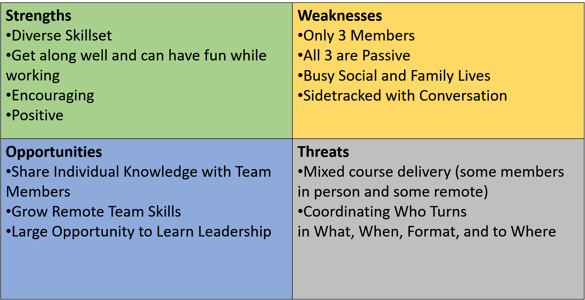

On the Fly Team Analyses
Team SWOT Analysis

On the Fly Team Analyses
Introduction
As a team, we are eager to continue to improve upon our skills and succeed in the MSIS Program. Within just the first few weeks, we have been able to effectively gauge our talents as both individuals, and as a cohesive unit. We aim to use our varied skillsets to our advantage, proving to handle the workload as a team of three. In hopes of becoming the best versions of ourselves and the best teammates possible, we will continuously root each other on, picking up the pieces for one another as obstacles come our way.
SWOT Analyses
After working vigorously as a team throughout the EY case the first week, we had confidence in our abilities to work as a unit. We delivered a powerful slide deck with a strong design and a solution that was backed by an ample amount of research. Although we did not advance as a finalist, we were proud of what we accomplished and excited about working together throughout core. However, as we continued to analyze our skills and weaknesses through SWOT analyses, we discovered that there were some areas we need to improve. For example, all three individuals on this team are passive, making it difficult to speak up when there is a disagreement. The three of us need to work on accepting different opinions and expressing our disagreement in a way that is proactive. With all of us being conflict-avoidant, we recognize a large opportunity for each of us to grow as leaders. We will do this by rotating leaders every two weeks so that each of us get a chance to improve in that area.
Performance Review
We realized coming out of the EY case that there is tremendous work ahead for Team 26 and we are excited to get to work. Ultimately, coming out of the EY case we were able to realize our individual strengths but also our shortcomings as a team. Primarily our performance in the EY case suffered because we were strangers working together towards a common goal. Moving forward with the elements described in this report serving as a framework we hope to form a more cohesive team that is understanding of itself and strives towards the highest professional level. We already have developed a better understanding of our individual skillsets, as well as our overall team skillset, and how we can formulate these into short-term and long-term goals.
Skills Assessment
Following the EY case, we established a list of what we feel will be the necessary skills to succeed this semester, organized into the three broad categories of soft skills, team skills, and technical skills. As individuals, we each ranked the other two team members on a scale of 1-5 for each skill we listed. (Note: this process did not include a self-assessment, as we felt this could potentially skew the results).
The resulting graphs, for each individual team members, as well as an aggregated team graph, visualize that each member comes from a different background and contributes a diverse skillset to the team. Awareness of these assessment results will be helpful throughout the semester as we are assigned different types of deliverables, ranging from presentations, reports, cases, and coding files. With a better understanding of each member’s skillset, we can better plan the best way to work on these assignments.
This assessment can also serve as an important benchmark for our journey throughout the MSIS program. As a team, we can reassess each other’s skills as the semester goes on and see how they improve as we progress throughout the Core. These skills also helped us to recognize where we need focus on development, and helped us to form short- and long-term goals that will aid us on this journey.
Short Term Goals
Collectively Team 26 has decided on strategic short-term goals that will develop our team management and cohesion soon. We plan to effectively manage time we spend on shared group assignments. generate a weekly task list for shared assignments and study sessions to better manage our time as a team. Encourage team mates to take the lead with assignments, to foster leadership amongst us as individual and grow the leadership present in Team 26. Our last short-term goal is to be proactive with reaching out to GA and instructors regarding questions with assignments and projects. This will foster our ability to engage stakeholders and determine critical requirements for assignments and deliverables.
Long Term Goals
Team 26 shoots for the moon in long term goals. Ultimately the three of us plan to maintain a professional relationship after the MSIS program. We have all agreed that we are to become c-suite execs of the Big 3 consulting firms, McKinsey, Bain, and Boston Consulting Group, with the goal of merging them into the Big One. Long term goals for the program itself include placing first in a Case Competition, and to be recognized as one of the top five teams from this year's cohort.
After Action Report
Focusing on the outcome of EY our team plans to initially embrace the feedback provided by gust judges, and to prioritize simplicity. The reality of the case proved we lacked an understanding of what was expected and that we as a team did not think of strategy beyond the low hanging fruit. From this we learned that addressing the obvious solution will not set us apart in this program and that the solutions we do provide must be presented coherently with the MINTO method stringently reinforced throughout our offerings. Our goal moving forward is to strive towards the most creative solutions and to present them with clarity. To experiment with this Team 26 will utilize individual and peer feedback and evaluate nontraditional approaches in future cases while keeping clarity and strategy in the forefront of our focus.
Kaylin Kenny, a natural born leader, has accepted an offer from Protiviti in the Chicago office as a Technical Consultant. Kaylin will be completing the BIA concentration with a co-coconcentration is Enterprise Systems.
Jacob Evans, our governance and security wizard will be joing Crowe in the Chicago office as a Cybersecurity Consulting Associate. Jacob will be completing the BIA concentration with a co-coconcentration is Enterprise Security.
Coley Smith will be joining Deloitte Consulting as a Application and Program Analyst Consultant in the Chicago Office. Coley will be completing the BIA concentration with a co-coconcentration is Enterprise Systems.
Soft Skills
Team Skills
Technical Skills


Short-Term
Long-Term